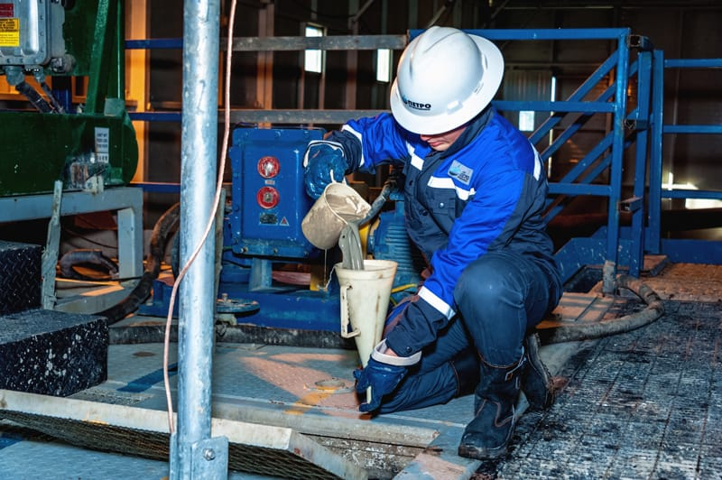

drilling engineer
(03.2025-now)
technical support for drilling, calculation and adjustment of well trajectory, management of the drilling process using specialized equipment, quality and safety control, as well as reporting and interaction with the client.
mud engineer
(09.2024-03.2025)
development of drilling fluid formulations, monitoring of their properties (density, viscosity, chemical composition) and adjustment of the composition depending on geological conditions, as well as hydraulic calculations, reporting and interaction with the drilling crew to maintain the safety and efficiency of the drilling process.
